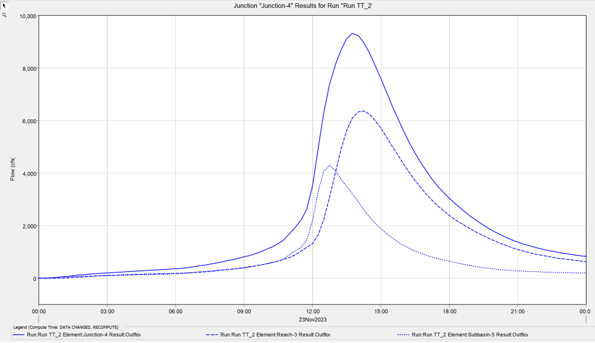
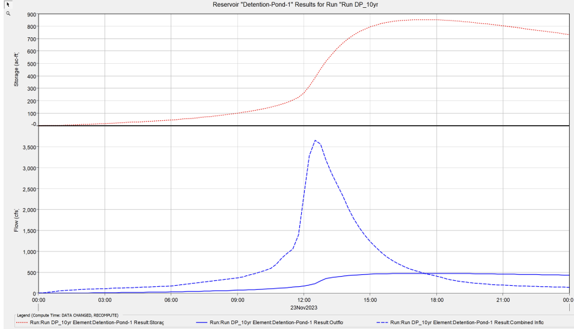

In my Modeling Assignment, I embarked on an intricate project using the HEC-HMS Modeling System. This tool, developed by the U.S. Army Corps of Engineers, simulates hydrologic processes in dendritic watershed systems. My task involved creating a detailed model that represented various components of a watershed, from sub-basins to junctions, reservoirs, and reaches. I meticulously set parameters and input meteorological data to simulate different storm events, analyzing their hydrologic impact.
The project required a deep understanding of watershed dynamics. I explored various scenarios, including different storm events and watershed conditions, to assess their effects on peak discharge rates, runoff volumes, and flow patterns. This comprehensive approach allowed me to observe how changes in watershed characteristics, such as increased urbanization, influence hydrologic responses. The results were insightful, highlighting the critical role of effective management strategies in flood mitigation and watershed planning.
This assignment was not just a demonstration of technical proficiency in hydrologic modeling but also an exploration of the environmental impacts of watershed changes. It emphasized the importance of accurate data collection and modeling in predicting hydrologic responses and informed decision-making in environmental and water resource engineering.
 